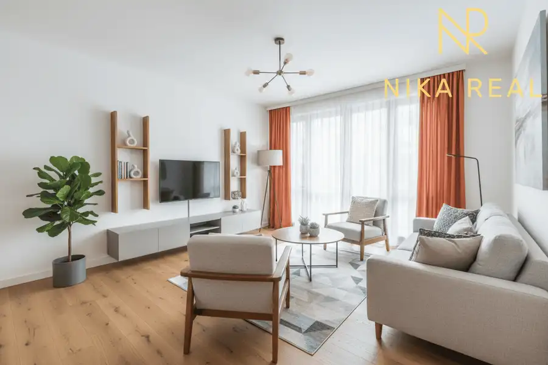

Veľký 3izbový byt s loggiou a pivnicou len 10 min. od Trnavy
Majcichov
- Dispozícia3-izbový
- Plocha82.36 m²
- Poschodie3.
- StavČiastočná rekonštrukcia
- VlastníctvoOsobné
O nehnuteľnosti
Hľadáte pokojné bývanie mimo mestského ruchu, no stále v blízkosti Trnavy? Exkluzívne iba u nás nájdete veľkorysý 3-izbový byt v obci Majcichov. Byt je orientovaný na 2 svetové strany (V a Z) a ponúka priestrannosť, výbornú dostupnosť do mesta a priestor na rekonštrukciu podľa vašich predstáv. Vizualizácie pre inšpiráciu vo fotogalérii. TOP benefity ✔ Veľkorysá výmera 82,32 m² vrátane loggie a pivnice✔ Čiastočne zrekonštruovaný byt – okná, loggia, podlahy✔ 3 nepriechodné izby a samostatná kuchyňa s komorou✔ Loggia orientovaná na západ, byt na dve svetové strany (Z/V)✔ Veľká murovaná pivnica ✔ Vlastné kúrenie (plynový kotol)✔ Bezproblémové parkovanie pri bytovom dome✔ Vhodný aj ako investíciaDispozícia: Celková výmera 82,32 m2 /byt 70,58 m2 + loggia 4,89 m2 + pivnica 6,89 m2Chodba 9,22 m2Kuchyňa 9,74 m2Komora 1,90 m2Obývacia izba 19,89 m2Izba 11,86 m2Izba 12,84 m2Kúpeľňa 3,23 m2WC 1,90 m2Loggia orientovaná na západ 4,89 m2Pivnica 6,89 m2Technické detaily a vybavenie:Bytový dom bol postavený v roku 1989Zateplenie a strecha boli rekonštruované v r. 2019Okná a vchodové dvere bytového domu boli vymenenéV byte boli vymenené plastové okná so sieťkami a podlahy v r. 2020Zrekonštruovaná loggiaKúrenie a TUV: plynový kotol r. 2022 + radiátoryIS: elektrina, plyn, vodovod, kanalizáciaLokalita – Majcichov:Obľúbená obec len pár minút od Trnavy s kompletnou občianskou vybavenosťou – škôlka, škola, pošta, zdravotné stredisko, potraviny aj reštaurácie. Výborná dostupnosť na diaľnicu D1 a R1, ideálna pre rodiny aj pracujúcich v Trnave či Bratislave.Cena a služby:Cena: 141.600 € (konečná) – vrátane právneho a realitného servisu, zmlúv, katastra, odovzdania aj prepisu energií.Pomôžeme aj s financovaním prostredníctvom hypotekárneho úveru.Zaujal vás tento byt? Dohodnite si obhliadku – k dispozícii 7 dní v týždni.Raz vidieť je viac ako 100-krát počuť! Veronika Dedáčková+421 911 290 837dedackova@nikareal.sk
Parametre
| Cellar area | 6.89 m² |
|---|---|
| Cena vrátane energií | Nie |
| Druh | 3 izbový byt |
| Dátum zverejnenia | 25. 5. 2026 |
| Energetický certifikát budovy | nie je |
| Energie | 250 |
| Plocha lodžie | 4.89 m² |
| Podlažie | 3 |
| Počet izieb / miestností | 3 |
| Počet lodžií | 1 |
| Počet pivníc | 1 |
| Stav nehnuteľnosti | Čiastočná rekonštrukcia |
| Typ | Predaj |
| Umiestnenie | Posledné podlažie |
| Vlastníctvo | Osobné |
| Vybavenie | Lodžia, Pivnica, Verejné parkovanie, Špajza, Sklad |
| Vykurovanie | Lokálne |
| Úžitková plocha | 82.36 m² |
Kde to je


Mohlo by Vás zaujímať
 PozemokNové7
39 000 €Záhrada a relax v blízkosti priehrady a Malých Karpát
Suchá nad Parnou
657 m²
Exkluzívne iba u nás na predaj – rekreačný pozemok v obci Suchá nad Parnou.Ponúkame Vám rekreačný pozemok o výmere 562 m² v atraktívnej rekreačnej…
PozemokNové7
39 000 €Záhrada a relax v blízkosti priehrady a Malých Karpát
Suchá nad Parnou
657 m²
Exkluzívne iba u nás na predaj – rekreačný pozemok v obci Suchá nad Parnou.Ponúkame Vám rekreačný pozemok o výmere 562 m² v atraktívnej rekreačnej…
 DomNové10
280 000 €Veľký, čiastočne zrekonštruovaný rodinný dom v centre obce, len 10 min. od Trnavy
Cífer
310.5 m²
Exkluzívne iba u nás na predaj veľký rodinný dom vhodný aj na dvojgeneračné bývanie alebo spojenie bývania a podnikania. Ponúka rôzne možnosti úpravy…
DomNové10
280 000 €Veľký, čiastočne zrekonštruovaný rodinný dom v centre obce, len 10 min. od Trnavy
Cífer
310.5 m²
Exkluzívne iba u nás na predaj veľký rodinný dom vhodný aj na dvojgeneračné bývanie alebo spojenie bývania a podnikania. Ponúka rôzne možnosti úpravy…

DomNové10 180 000 €Veľký 5-izbový rodinný dom pod Malými Karpatami Dolné Orešany 301 m² EXKLUZÍVNE LEN U NÁS!Na predaj priestranný 5-izbový rodinný dom s veľkým pozemkom o výmere 733 m² v pokojnej obci Dolné Orešany, len 12 minút od…